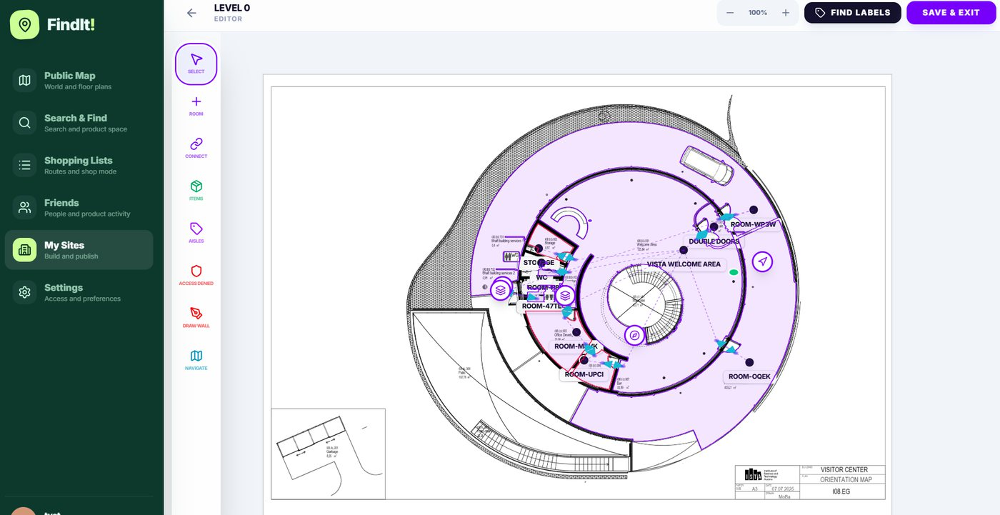
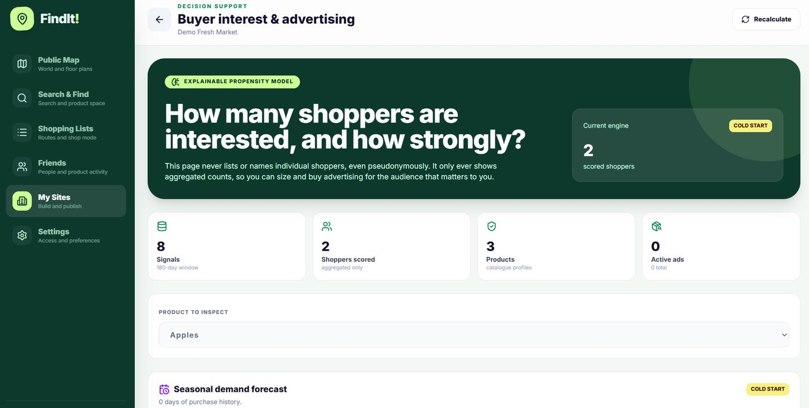
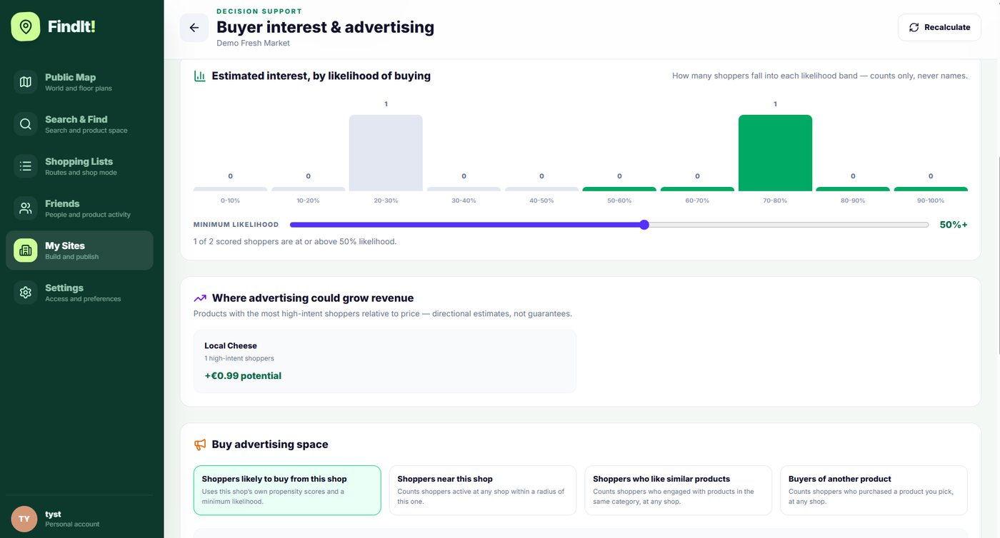
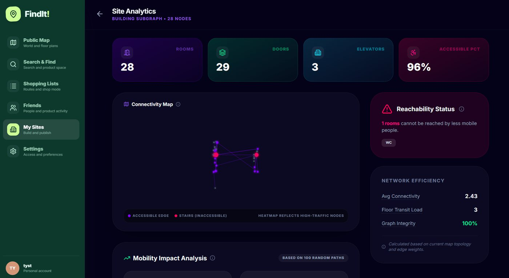
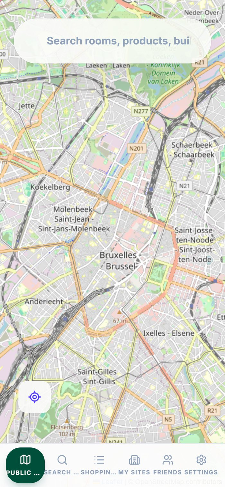

Alles auf dieser Seite funktioniert schon heute im aktuellen Build. Das ist keine Visionsfolie: Es ist ein Rundgang durch das echte Produkt, Funktion für Funktion, mit echten Bildschirmaufnahmen und Screenshots.
Der zentrale Einstiegspunkt von Find-It!. Kund:innen suchen nach Produkten, Geschäften, Diensten, Räumen oder Kategorien und bekommen echte, kartierte Ergebnisse zurück — mit Live-Zählern, gesponserten Platzierungen von lokalen Geschäften und Freundesaktivität, keine generische Web-Liste.
Über die Produktsuche hinaus können Kund:innen das Verzeichnis selbst durchsuchen — gefiltert nach dem, was ihnen wirklich wichtig ist, nicht nur nach Preis.
Die Kartenebene, die alles verbindet — von der stadtweiten Suche bis ins Detail auf Campus- und Gebäudeebene. Rollstuhl-, Kinderwagen- und lieferfreundliche Routenführung ist Teil derselben Engine.

Deterministische, schlanke Algorithmen verwandeln einen hochgeladenen Grundriss in einen navigationsfähigen Graphen — Räume, Gänge, Türen und Verbindungen, im Browser bearbeitbar und korrigierbar. Keine teuren Sensoren, kein aufwendiges KI-Training in der ersten Version nötig.
Eine Liste vor dem Besuch erstellen, die dann zu einer Live-Route im Geschäft wird — mit synchronisierter Checkliste, standortbezogenen persönlichen Angeboten und Budgetkontrolle, bis hin zu einem funktionierenden Scan-and-Pay-Checkout.
Jedes teilnehmende Geschäft erhält ein Schritt-für-Schritt-Einrichtungs-Dashboard — Gebäude & Layout, Produkte & Angebote, Scannen & Organisieren, Shop-Infos — als schlanke Alternative zu teurer E-Commerce-Infrastruktur.

Erklärbares Propensity-Modell

Werbefläche nach Kaufabsicht kaufen
Das ist die Engine hinter dem 150%-Werbeguthaben-Bonus des Pilots: ein erklärbares Modell, das die Kaufwahrscheinlichkeit aus echten Signalen bewertet, ohne je einzelne Käufer:innen zu benennen — nur aggregierte Zahlen, gegen die ein Geschäft Werbung dimensionieren und ausrichten kann.

Jeder kartierte Standort ist gleichzeitig ein Barrierefreiheits-Audit — er markiert Räume, die für weniger mobile Menschen unerreichbar sind, und bewertet die Konnektivität und Graphintegrität des gesamten Gebäudes.

Dieselbe App, dieselben Daten, responsiv bis hinunter zum Handybildschirm — weil die meisten lokalen „bevor ich losgehe"-Suchen auf dem Handy stattfinden.
Als Nächstes
Offen zu sagen, was ein funktionierender Prototyp ist und was produktionsreif, ist uns wichtiger als ein schöngeredeter Fahrplan.
FindIt Checkout funktioniert heute durchgängig, läuft aber auf Prototyp-Zahlungen. Als Nächstes folgt die Anbindung eines echten Zahlungsdienstleisters, bevor ein Geschäft damit echte Transaktionen abwickelt.
Das Propensity-Modell funktioniert vom ersten Tag an, wird aber mit mehr Signalen schärfer. Sobald Pilot-Geschäfte live gehen, verbessern sich Targeting und Prognosen mit echter Käuferaktivität.
Die responsive Web-App funktioniert heute schon gut auf dem Handy; dedizierte iOS/Android-Apps und einbettbare Widgets sind der nächste Schritt für mehr Reichweite.